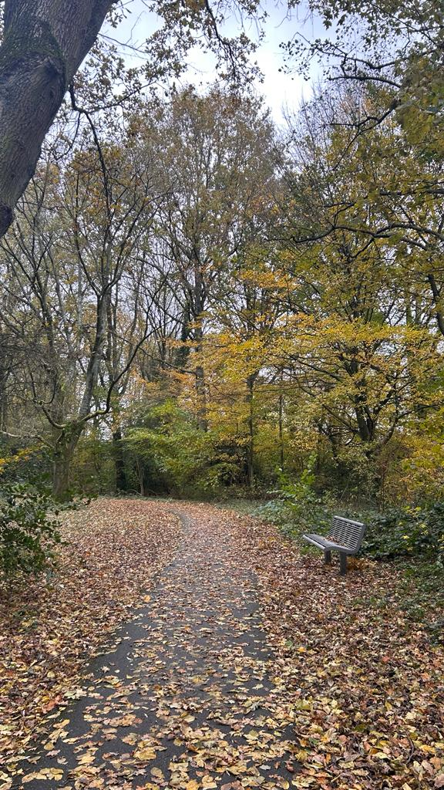
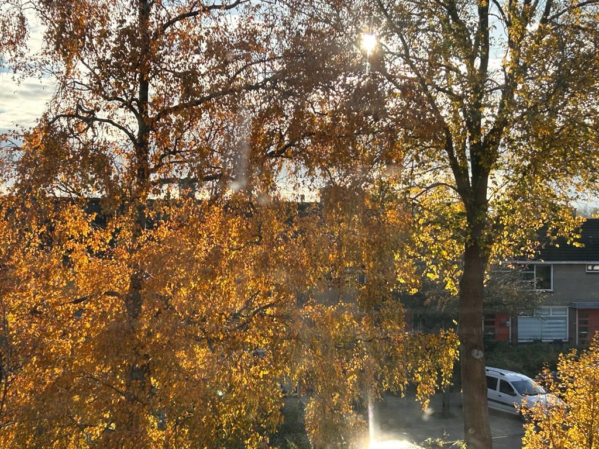

ERVAAR HET ZELF

Westerpark
Het Westerpark in Zoetermeer kende een duistere geschiedenis die lang onopgemerkt
bleef. Verhalen fluisterden over verlaten hoeken waar schaduwen zich verstopten,
waar het licht van de dag moeite had om door te dringen. Sommigen beweerden vreemde
geluiden te horen die 's nachts uit de diepten van het park leken te komen, geluiden
die het gewone ver te buiten gingen.
Oude legendes suggereerden dat het park gebouwd was op de grond van een vergeten
begraafplaats, waar rusteloze geesten nog steeds ronddwaalden, hun aanwezigheid kenbaar
makend aan degenen die bereid waren te luisteren. Lokale folklore sprak over schimmen
die zich vermengden met de bomen, en over mysterieuze krachten die rond de vijvers
en langs de donkere paden zwierven.
Zelfs wanneer de zon hoog aan de hemel stond, konden bezoekers soms een rilling langs
hun ruggengraat voelen gaan, als een onzichtbare aanwezigheid die hen in de gaten
hield. Het Westerpark droeg een aura van onverklaarbare geheimen met zich mee, en de
verhalen over zijn onheilspellende kant werden doorverteld, van generatie op generatie.

Sportieve activiteiten
Zoetermeer biedt een gevarieerd sportlandschap met voor elk wat wils.
Van de opwindende indoor skipistes van SnowWorld tot talloze sportclubs,
fitnesscentra en zwembaden, de stad verwelkomt sportliefhebbers met open
armen.
Voetbal, hockey, tennis en diverse buitensporten vinden allemaal ruimte
in de verschillende sportcomplexen en groene gebieden van Zoetermeer.
Lokale evenementen en competities stimuleren de deelname en versterken de
gemeenschapsbanden, waardoor de stad een bruisende en actieve sportcultuur heeft.